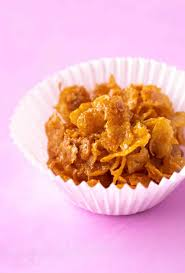

Honey Joys

Description
A classic Australian party food
Ingredients
- 4 cups corn flakes
- 1/3 cup of butter
- 1/3 cup of sugar
- 1 tbsp honey
Steps
- Preheat the oven to 300F
- Add butter, sugar and honey to a saucepan and heat the mixture on medium-low until foamy
- Pour over the cornflakes and use a spoon to evenly coat the cornflakes
- Line a muffin pan with paper cups and spoon the mixture into the cups
- Bake for 10 minutes until golden